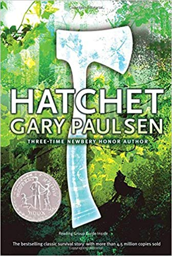
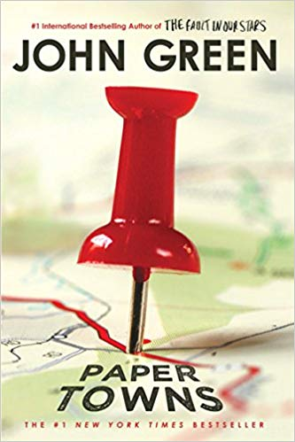

| https://images-na .ssl-images-amazon. com/images /I/91b0C2YNSrL.jpg |
The Hobbit By: J.R.R Toilkien Written for J.R.R. Tolkien's own children, The Hobbit met with instant critical acclaim when it was first published in 1937. Now recognized as a timeless classic, this introduction to the hobbit Bilbo Baggins, the wizard Gandalf, Gollum, and the spectacular world of Middle-earth recounts of the adventures of a reluctant hero, a powerful and dangerous ring, and the cruel dragon Smaug the Magnificent. https://www.goodreads.com/book/show/5907.The_Hobbit_or_There_and_ Back_Again |
https://en. wikipedia.org/ wiki/J._R. _R._Tolkien |
 https://images-na. ssl-images-amazon. com/images/I/51D F6ZR8G7L._SX329_BO1, 204,203,200_.jpg |
Harry Potter By: J.K. Rowling Harry Potter's life is miserable. His parents are dead and he's stuck with his heartless relatives, who force him to live in a tiny closet under the stairs. But his fortune changes when he receives a letter that tells him the truth about himself: he's a wizard. A mysterious visitor rescues him from his relatives and takes him to his new home, Hogwarts School of Witchcraft and Wizardry https://www.goodreads.com /book/show/3.Harry_Potter_and_the_Sorcerer_s_Stone |
https://www.goodreads. com/book/show/3 .Harry_Potter_and_the_ Sorcerer_s_Stonehttps://www. jkrowling.com /about/ |
| https://images-na.ssl-images-amazon.com/images/I/71WSzS6zvCL.jpg |
The Hunger Games By: Suzanne Collins In the ruins of a place once known as North America lies the nation of Panem, a shining Capitol surrounded by twelve outlying districts. The Capitol is harsh and cruel and keeps the districts in line by forcing them all to send one boy and one girl between the ages of twelve and eighteen to participate in the annual Hunger Games, a fight to the death on live TV. Sixteen-year-old Katniss Everdeen, who lives alone with her mother and younger sister, regards it as a death sentence when she is forced to represent her district in the Games.https://www.goodreads. com/book/show/ 2767052-the- hunger-games |
https://www. goodreads .com/book/show /2767052 -the-hunger -gameshttp://www. suzannecol linsbooks. com/bio.htm |
|  https://images-na.ssl-images- amazon.com/images/I/ 61FbXZT3CBL._SX334_ BO1,204,203, 200_.jpg |
Hatchet By: Gary Paulsen Brian is on his way to Canada to visit his estranged father when the pilot of his small prop plane suffers a heart attack. Brian is forced to crash-land the plane in a lake--and finds himself stranded in the remote Canadian wilderness with only his clothing and the hatchet his mother gave him as a present before his departure. https:// www.goodreads. com/book/show /50.Hatchet
|
https:/ /www.good reads.com/book /show/50. Hatchethttps://www.penguin randomhouse.com /authors/23384/ gary-paulsen |
| https:// images-na.ssl- images-amazon .com/images/I /41kkT0WKkXL. _SX310_BO1,20 4,203,200_.jpg |
Night By: Elie Wiesel Born in the town of Sighet, Transylvania, Elie Wiesel was a teenager when he and his family were taken from their home in 1944 to Auschwitz concentration camp, and then to Buchenwald. Night is the terrifying record of Elie Wiesel's memories of the death of his family, the death of his own innocence, and his despair as a deeply observant Jew confronting the absolute evil of man. https:/ /www.goodreads. com/book/show/ 1617.Night |
https://www.goodreads.com/book/show/1617.Nighthttps://www. nobelprize.org /prizes/peace /1986/wiesel /biographical/
|
 https://images-na. ssl-images-amazon. com/images/I/ 81XSN3hA5gL.jpg |
Hitchhiker's Guide to the Galaxy By: Douglas Adams Seconds before the Earth is demolished to make way for a galactic freeway, Arthur Dent is plucked off the planet by his friend Ford Prefect, a researcher for the revised edition of The Hitchhiker's Guide to the Galaxy who, for the last fifteen years, has been posing as an out-of-work actor.https://www.goodreads.com/ book/show/386162.The_ Hitchhiker_s_Guide _to_the_Galaxy |
https://www. goodreads.com/book/ show/386162. The_Hitchhiker_s_ Guide_to_the_Galaxyhttps:/ /en.wikipedia .org/wiki/ Douglas_Adams |
 https://images-na .ssl-images- amazon.com /images/I/ A1xkFZX5k-L.jpg |
A Brief History of Time By: Stephen Hawking In the ten years since its publication in 1988, Stephen Hawking's classic work has become a landmark volume in scientific writing, with more than nine million copies in forty languages sold worldwide. That edition was on the cutting edge of what was then known about the origins and nature of the universe. But the intervening years have seen extraordinary advances in the technology of observing both the micro- and the macrocosmic worlds.https://www.g oodreads.com/book/ show/3869.A_Brief_ History_of_Time |
https:// www.goodreads.com /book/show/3869 .A_Brief_History _of_Timehttp://www.haw king.org.uk/ about-stephen .html |
| https://images-na.ssl -images-amazon .com/images /I/51%2B2 QZIRWfL._SX308_BO1, 204,203,200_.jpg |
Murder On The Orient Express By: Agatha Christie What more can a mystery addict desire than a much-loathed murder victim found aboard the luxurious Orient Express with multiple stab wounds, thirteen likely suspects, an incomparably brilliant detective in Hercule Poirot, and the most ingenious crime ever conceived?https://www. goodreads.com/ book/show/85351 0.Murder_on _the_Orient _Express |
https://www. goodreads.com/book /show/853510. Murder_on_the_ Orient_Expresshttps://www .agathachri stie.com/about -christie #christies -life |
|  https://images -na.ssl- images-amazon. com/images/ I/81WBJQUEFsL.jpg |
Paper Towns By: John Green Quentin Jacobsen has spent a lifetime loving the magnificently adventurous Margo Roth Spiegelman from afar. So when she cracks open a window and climbs into his life, dressed like a ninja and summoning him for an ingenious campaign of revenge, he follows. After their all-nighter ends, and a new day breaks, Q arrives at school to discover that Margo, always an enigma, has now become a mystery. But Q soon learns that there are clues, and they're for him. Urged down a disconnected path, the closer he gets, the less Q sees the girl he thought he knew... https://www.goo dreads.com/book/ show/6442769- paper-towns |
http://www.john greenbooks. com/bio |
 https://images3 .penguinrandomhouse .com/cover/ 9780385737944 |
The Maze Runner By: James Dashner "If you ain't scared, you ain't human." When Thomas wakes up in the lift, the only thing he can remember is his name. He's surrounded by strangers--boys whose memories are also gone."Nice to meet ya, shank. Welcome to the Glade." Outside the towering stone walls that surround the Glade is a limitless, ever-changing maze. It's the only way out--and no one's ever made it through alive.https://www.goodreads.com/book/show/20360301-the-maze-runner-series">https://www.goodreads. com/book/show/ 20360301-the-maze -runner-series |
https:/ /www.goodreads .com/book/show /6186357-the- maze-runnerhttp://www. jamesdashner.com /about-james -dashner/ |